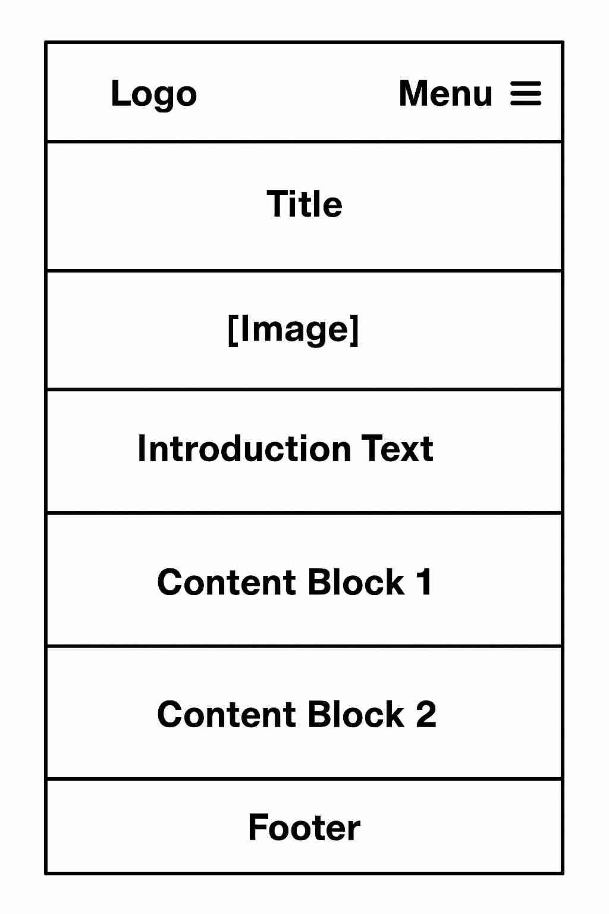

Overview
MediaMosaic is a strong name because it conveys the idea of a diverse and interconnected collection of media—video games, movies, TV shows, and books—coming together like pieces in a mosaic. It suggests curation, variety, and creativity, all of which align perfectly with a site offering reviews, recommendations, and news across multiple entertainment formats.
Purpose
The website serves as a comprehensive hub for media enthusiasts of any stripe—books, shows, video games, or movies. It provides information on the latest releases, trailers, ratings, and detailed descriptions. Users can easily search and discover their next favorite piece of media in a user-friendly environment.
Scenarios
The scenarios for MediaMosaic are designed to address the common questions and needs of entertainment fans visiting the site.
- What are the top-rated movies currently available to stream? Users can explore the highest-rated movies based on reviews and ratings provided on the platform.
- What is the overall thought on the new game that was just released? The site provides detailed reviews and ratings for the latest video games.
Website Logo

Style Guide
| Primary (used for headings and accents) | Secondary (used for backgrounds and buttons) |
|---|---|
| #1A1A1A | #FFB400 |
Typography
Heading Font: Roboto, sans-serif
Paragraph Font: Roboto, sans-serif
Normal Paragraph Example
The dashboard project demonstrates the university's commitment to creating an inclusive, efficient, and collaborative environment that supports academic excellence.
Colored Paragraph Example
Lynnwood's commitment to community engagement is evident in its partnerships with local businesses and charitable initiatives.
Wireframes
Desktop Wireframe

Mobile Wireframe
